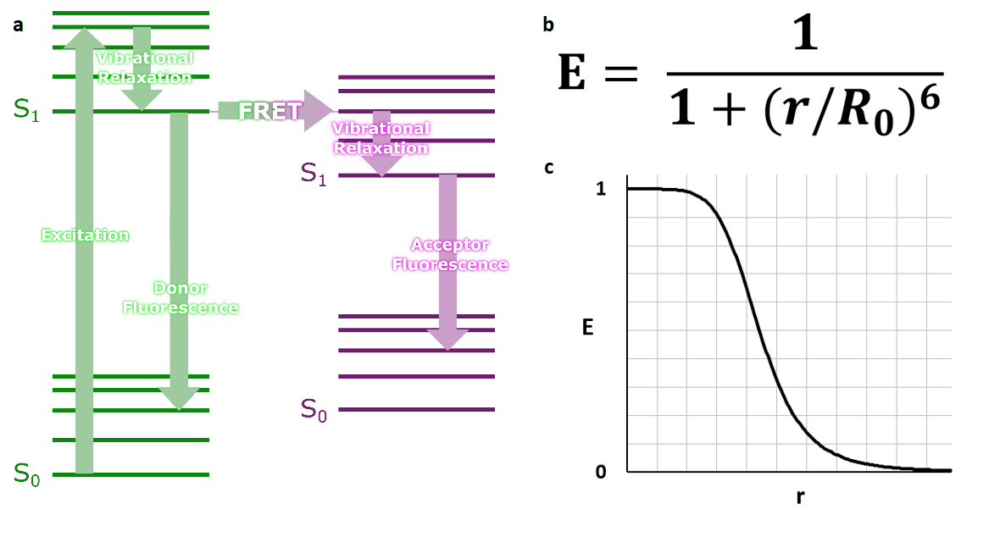
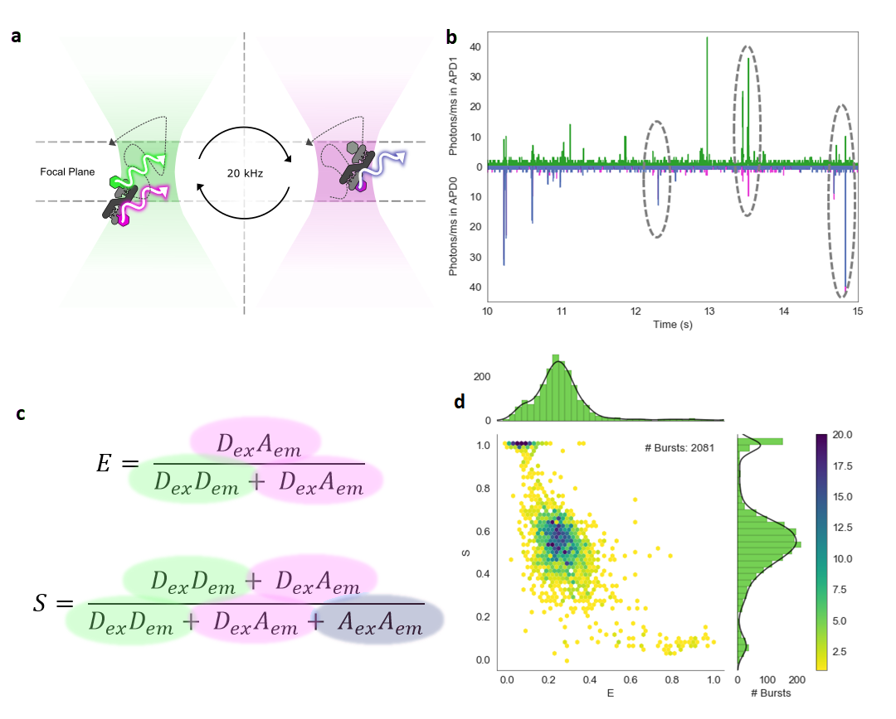
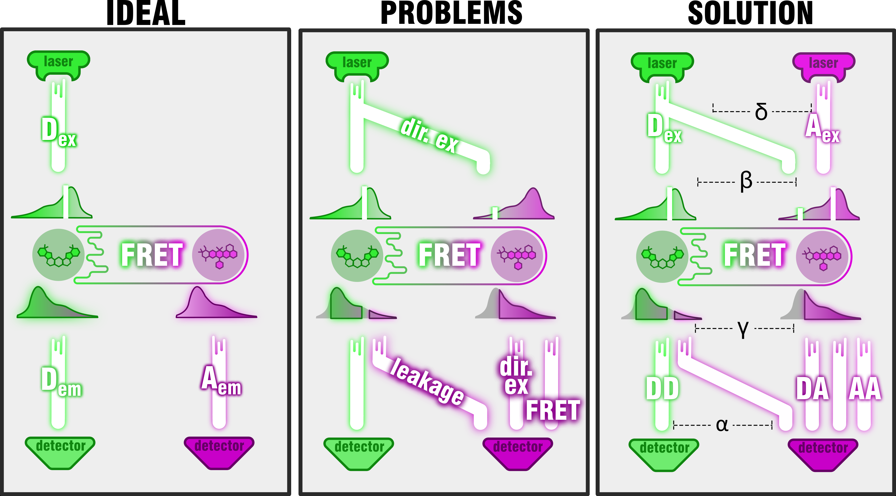
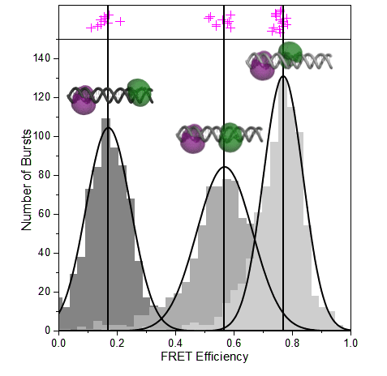

Single-Molecule Förster Resonance Energy Transfer (FRET)
This is the colour blind friendly version of this page in which magenta is used to represent red light, to distinguish it from green. To go back to the green/red version click here
smFRET is a powerful biophysical technique which can reveal spatial information about biomolecules in a way which is sensitive to both dynamic and static heterogeneity between subpopulations within the same sample. It can measure kinetics of conformational changes at equilibrium with no need for synchronisation, and can measure absolute distances for infering precise structural information.
Förster Resonance Energy Transfer
 Fig 1a. Jablonski-Perrin diagram of FRET. Upon excitation and vibrational
relaxation, the donor excited state can decay either through fluorescence or through resonance energy transfer to
the acceptor. The acceptor then fluoresces, but only after also undergoing vibrational relaxation, which further
reduces the energy of the emitted photon. b. Equation giving the relationship between efficiency of transfer and
distance, r. R0 is the Förster radius which is characteristic of any given fluorophore pair. c. Graph showing relationship between efficiency and distance.
FRET is the transfer of excitation energy from a short wavelength fluorophore to a long wavelength fluorophore (Förster 1948). The transfer has a strong distance dependence in the 3-10 nm range
and so is often exploited for studying biomolecules. This is typically used to study binary on/off processes at the ensemble level, such as cleaving, binding, opening etc.
Confocal Single-Molecule Detection and Alternating Laser Excitation (ALEX)
 Fig 2a. Single molecules diffuse in and out of a confocal volume of approximately 1 μm3 constructed by focusing the lasers into a diffraction limited spot and using lenses and a pinhole to select light in a thin focal plane. Alternating laser excitation (ALEX) 20,000 times a second between the donor (green) and acceptor (red) allows excitation of either dye multiple times per molecule as it transits the confocal volume. b. A typical time trace for an smFRET experiment, as per C, green emission under green excitation is shown in green (DexDem), red emission under green excitation shown in magenta, and red emission under red excitation is shown in blue. Encircled bursts from left to right are acceptor only, donor only, and doubly labelled. c. Equations for E and S. E* is the apparent FRET efficiency (see next section), it is a ratiometric measure which scales with distance. S, stoichiometry, is a measure of the presence of either dye, which can be assessed from the acceptor excitation of ALEX. d. A 2D ES histogram showing dye stoichiometry against FRET efficiency. Donor only molecules appear with low E* but high S, and acceptor only molecules appear with low S. Doubly labelled molecules appear with intermediate S.
smFRET techniques typically achieve the high signal to noise ration needed to detect single molecules by using a reduced detection volume. This can be done using Total Internal Reflection Fluorescence Microscope (TIRFM) for immobilised molecules, or using a diffraction limited spot for freely diffusing molecules as in the smfBox. By alternating the excitation laser between donor and acceptor wavelengths, not only can FRET efficiency be measured (under donor excitation), but apparent dye stoichometry can also be accessed (Lee 2005). In this way, a low FRET efficiency molecule can easily be distinguished from a donor in the absence of an acceptor, which may arise from incomplete labelling or photobleaching.
Accurate FRET
 Fig 3. Schematic of how accurate FRET works. a. The ideal situation; the donor is excited by a laser and emission is separately detected from both the donor and acceptor with equal efficiency. b. The problem; the acceptor can be directly excited by the laser due to the shorter wavelength tail of its absorption spectrum and the donor can leak emission into the acceptor detection channel due to the longer wavelength tail of its fluorescence spectrum. Furthermore, detection efficiencies and quantum yields are not equal. c. The solution; in addition to exciting the donor, the acceptor is also excited (at a longer wavelength) to distinguish the presence of either dye and gain access to comparable quantities to calculate correction factors. The amount of direct excitation of the acceptor with the donor excitation laser is corrected for by Delta. Beta relates the quantity of excitation of each dye by its corresponding laser (dependent on the relative excitation efficiencies and laser powers). Gamma relates the relative emission and subsequent detection efficiencies of each dye. Αlpha corrects for the emission of the donor into the acceptor channel.
Amongst the many applications of smFRET is finding Accurate FRET efficiency for absolute distance determination. For reasons shown in 3b, the equation for E in 2c does not give true FRET efficiency. However the use of an additional laser for acceptor excitation as in ALEX gives access to sufficient comparative parameters to correct E.
As shown in Fig 4, a recent worldwide benchmarking study (Hellenkamp 2018), has shown this method of absolute FRET determination to be both precise and accurate, and just as possible with the smfBox as any other microscope.
 Fig 4. Fully corrected FRET efficiency histograms of three doubly labelled DNA standards (models shown) measured using our microscope (grey). Vertical black lines and curves show Gaussian fits of data from our microscope, magenta crosses show results from 20 labs as part of a world-wide benchmarking study.
Lee, N. K.; Kapanidis, A. N.; Wang, Y.; Michalet, X.;
Mukhopadhyay, J.; Ebright, R. H.; Weiss, S. Accurate FRET
Measurements within Single Diffusing Biomolecules Using Alternating-Laser
Excitation. Biophys. J. 2005, 88, 2939−53 Available from: 10.1529/biophysj.104.054114
Hellenkamp, B.; Schmid, S.; Doroshenko, O.; Opanasyuk, O.;
Kühnemuth, R.; Adariani, S. R.; Ambrose, B.; Aznauryan, M.; Barth,
A.; Birkedal, V.; et al. Precision and Accuracy of Single-Molecule
FRET Measurements a Multi-Laboratory Benchmark Study. Nat.
Methods 2018, 15, 669−676 Available from: 10.1038/s41592-018-0085-0